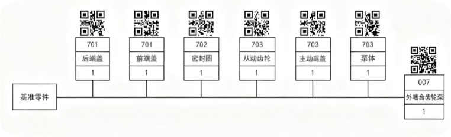

装配流程概览图
基本信息与功能
通过一对外啮合齿轮的旋转将液体从吸油腔输送到排油腔，提供稳定流量和压力。适用于液压系统、润滑系统等精密场合。
| 装配体ID | ASM-PUMP-007 |
|---|---|
| 装配体名称 | 小型外啮合齿轮泵 |
| 组件表 | asm_007 |
| 装配组织形式 | 固定式装配 |
| 生产类型 | 小批量试生产 |
参考图纸

组件列表 (零件和子装配)
| 二维码 | 组件信息 |
|---|---|
|
齿轮泵体
规格: GB-701-V1 材料: 球墨铸铁QT450-10 功能: 容纳主从动齿轮，形成密闭的吸油腔和排油腔，是齿轮泵的主体结构。 |
|
|
主动齿轮
规格: GR-702-Z15 材料: 20CrMnTi渗碳淬火 功能: 与电机轴连接，接受动力并驱动从动齿轮旋转，是动力传递的核心部件。 |
|
|
从动齿轮
规格: GR-703-Z15 材料: 20CrMnTi渗碳淬火 功能: 与主动齿轮啮合，协同完成液体的吸入和排出，确保齿轮泵的连续工作。 |
|

|
O型密封圈
规格: 内径22mm, 线径3.5mm 材料: 氟橡胶(FKM) 功能: 在轴端、端盖接合面提供密封，防止液压油泄漏，确保系统密封性。 |
|
前端盖
规格: FC-705-V1 材料: 球墨铸铁QT450-10 功能: 封闭泵体前端，支撑主动齿轮轴承，形成密闭的工作腔。 |
|

|
后端盖
规格: RC-706-V1 材料: 球墨铸铁QT450-10 功能: 封闭泵体后端，支撑从动齿轮轴承，并设有排气孔。 |
生产信息
生产条件
技术要求与验收
技术要求
验收条件
装配步骤
装配关系
-
齿轮泵体 与 前端盖
约束类型: Mate | 配合类型: None
描述: 泵体与前端盖的安装面贴合
-
齿轮泵体 与 后端盖
约束类型: Mate | 配合类型: None
描述: 泵体与后端盖的安装面贴合
-
主动齿轮 与 从动齿轮
约束类型: Mate | 配合类型: External_Mesh
描述: 主动齿轮与从动齿轮外啮合，侧隙保持在规定范围内
-
O型密封圈 与 前端盖
约束类型: None | 配合类型: Interference
描述: O型圈压入前端盖密封槽，形成过盈配合以密封
-
O型密封圈 与 后端盖
约束类型: None | 配合类型: Interference
描述: O型圈压入后端盖密封槽，确保密封性能
零件特征交互影响分析 (ASM-PUMP-007)
以下是对装配体 ASM-PUMP-007 中定义的零件间装配关系及其涉及的关键特征之间潜在交互影响的分析。
分析针对关系ID: 11 (齿轮泵体 前端盖)
约束类型: Mate | 配合类型: None
关系描述: 泵体与前端盖的安装面贴合
无特定特征对信息，基于关系类型和配合类型的通用分析。
知识库中未找到匹配的交互影响条目。
分析针对关系ID: 12 (齿轮泵体 后端盖)
约束类型: Mate | 配合类型: None
关系描述: 泵体与后端盖的安装面贴合
无特定特征对信息，基于关系类型和配合类型的通用分析。
知识库中未找到匹配的交互影响条目。
分析针对关系ID: 13 (主动齿轮 从动齿轮)
约束类型: Mate | 配合类型: External_Mesh
关系描述: 主动齿轮与从动齿轮外啮合，侧隙保持在规定范围内
无特定特征对信息，基于关系类型和配合类型的通用分析。
知识库中未找到匹配的交互影响条目。
分析针对关系ID: 14 (O型密封圈 前端盖)
约束类型: None | 配合类型: Interference
关系描述: O型圈压入前端盖密封槽，形成过盈配合以密封
无特定特征对信息，基于关系类型和配合类型的通用分析。
知识库中未找到匹配的交互影响条目。
分析针对关系ID: 15 (O型密封圈 后端盖)
约束类型: None | 配合类型: Interference
关系描述: O型圈压入后端盖密封槽，确保密封性能
无特定特征对信息，基于关系类型和配合类型的通用分析。
知识库中未找到匹配的交互影响条目。